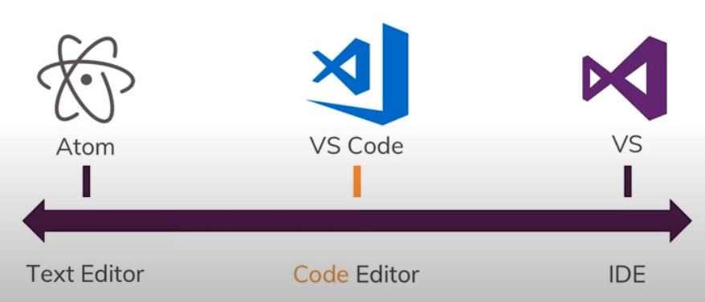

Setting Up a Development Environment
An introduction to Visual Studio Code
Land Acknowledgement
UBC Vancouver is located on the traditional, ancestral, and unceded territory of the xʷməθkʷəy̓əm (Musqueam), səl̓ilwətaɁɬ təməxʷ (Tsleil-Waututh), Stz’uminus, S’ólh Téméxw (Stó:lō), Skwxwú7mesh-ulh Temíx̱w (Squamish), and Coast Salish peoples.
Please take a moment to explore native-land.ca so that you can visualize the indigenous territories, languages, and treaties in your area.
Outline
- What is a Development Environment?
- Editors
- Visual Studio Code
- Terminal
- Source Control
- Remote Machines
- Community
What is a Development Environment?
What is a Development Environment?
- Code editor
- Command line interface (CLI)
- Version control system
- Package manager
Editors
- syntax highlighting
- syntax checking
- code completion
- automatic code formatting
- powerful text manipulation and scrolling tools
Editors
- Notepad
- Notepad++
- Atom
- Visual Studio Code (VS Code)
- Vim
- Nano
- and many more ...
Online Editors
Visual Studio Code
Installing
User Interface

Keyboard Shortcuts
Find and Replace
What are regular expressions?
Exercise 1
Multiple Cursers
Themes
Settings
- User Settings
- Workspace Settings
Extensions
Configure VS Code for Python
Formatting and Linting
Run, Debug, and Test
Exercise 2
Write unit tests for the other functions
Terminal
- Windows shell
- Command Prompt
- Powershell
- Unix shell
- Bash
- Z shell
Source Control
Remote Machines
More from the Research Commons at (UBC-V)
And from the Center for Scholarly Communication (UBC-O)